Serbie 2018
Belgrade - Skadarlija (Vendredi 21 septembre 2018)
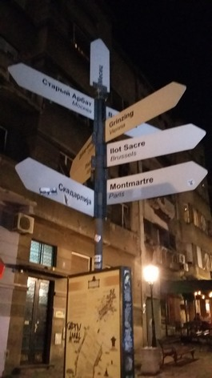
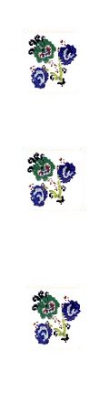
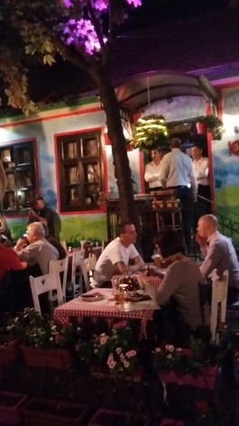
Montmartre est jumelé avec Skadarlija
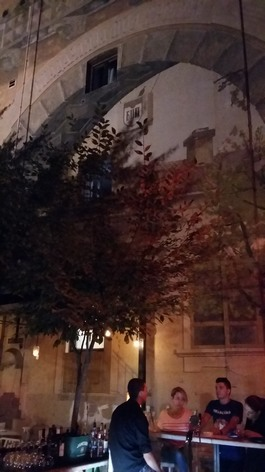
Pourquoi cette dame au grand chapeau et en robe longue maltraite-t-elle une belle berceuse? "Tiho noći, moje zlato spava..." "Dans la nuit calme mon enfant chéri dort..." C'est vraiment kitsch, comme à Montmartre. Tourisme, que de crimes on commet en ton nom!
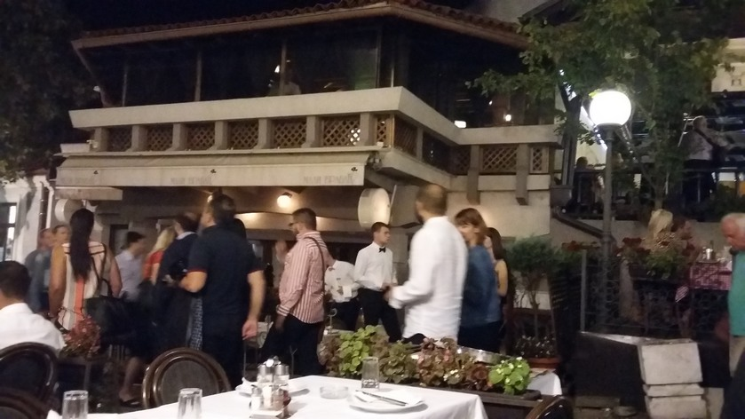
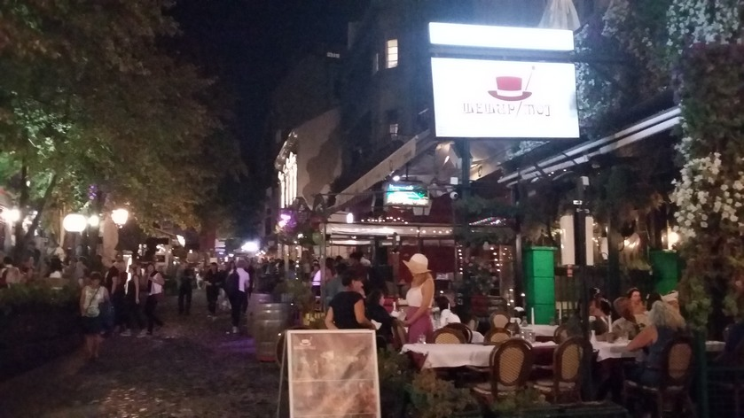
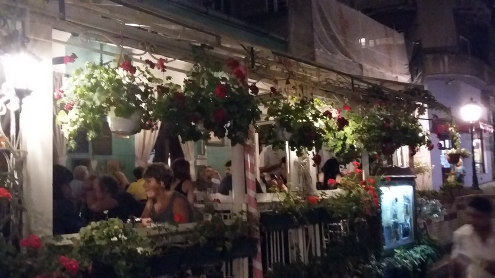
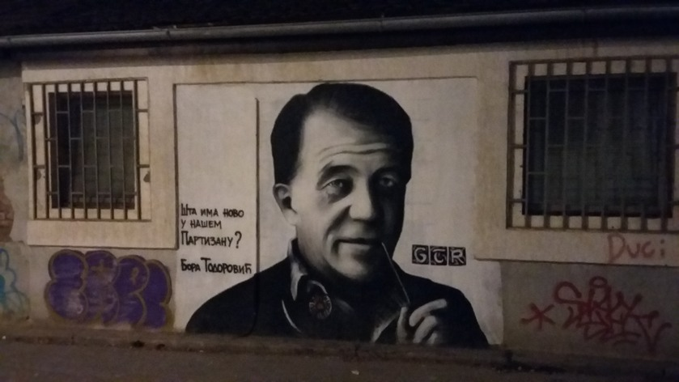
Petit-Piaf, Šešir moj et Todorović
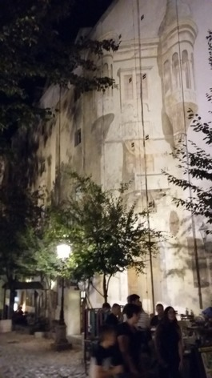
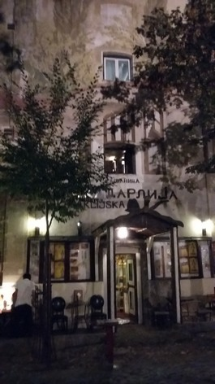
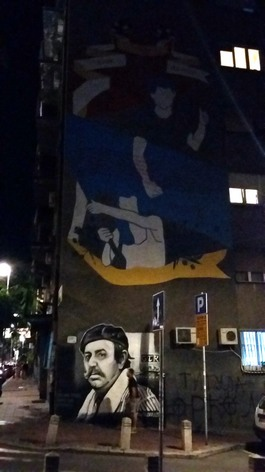
Bien que Belgrade soit résolument tournéee vers la musique branchée, on peut encore entendre à la Skadarlija des orchestres de "tambura" (mandoline des balkans). Les murs sont décorés de portraits d'acteurs (Bora Todorović et Zoran Radmilović...) qu'on devine très ressemblants et les façades aveugles agrémentées de trompe-l'œil.
Nous avions failli choisir de descendre au "Petit-Piaf" (référence à la môme parisienne)!